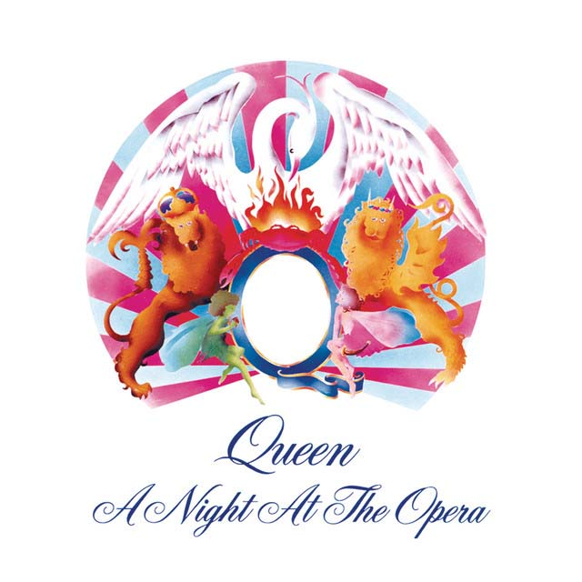
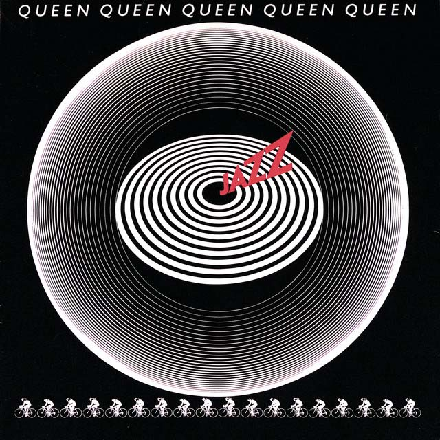

Discografía
-
A Night at the Opera 1975
"A Night at the Opera" es el cuarto álbum de estudio de la banda británica Queen, lanzado el 21 de noviembre de 1975. Fue un álbum altamente influyente y significativo en la historia del rock, y es considerado uno de los trabajos más importantes y exitosos de Queen. El álbum lleva el nombre de la famosa ópera de Marx Brothers, y su título refleja la diversidad musical y la amplitud de estilos que se encuentran en el disco. "A Night at the Opera" es una mezcla ecléctica de rock, pop, heavy metal, ópera, música clásica y vaudeville, lo que lo convierte en un trabajo notablemente diverso y experimental.
-
Queen II 1974
"Queen II" es el segundo álbum de estudio de la banda británica Queen, lanzado el 8 de marzo de 1974. Es un disco conceptual que muestra una mezcla única de estilos y un enfoque artístico distintivo que se convertiría en una marca registrada de Queen. El álbum se divide en dos partes, la "White Side" (Lado Blanco) y la "Black Side" (Lado Negro), cada una con su propio sonido y atmósfera. La "White Side" presenta canciones más melódicas y accesibles, mientras que la "Black Side" es más oscura y experimental.
-
Jazz 1978
"Jazz" es el séptimo álbum de estudio de la banda británica Queen, lanzado el 10 de noviembre de 1978. Es un álbum diverso y ecléctico que muestra la experimentación musical y la habilidad técnica de la banda en su apogeo creativo. "Jazz" se caracteriza por su amplia variedad de estilos musicales, que van desde el rock clásico hasta el pop, el funk, el disco y el jazz, como su título sugiere. Queen utilizó una amplia gama de instrumentos y arreglos complejos para lograr una paleta sonora rica y dinámica.